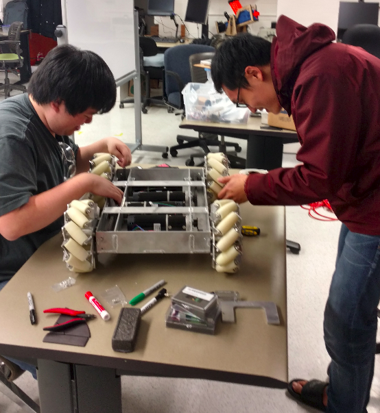
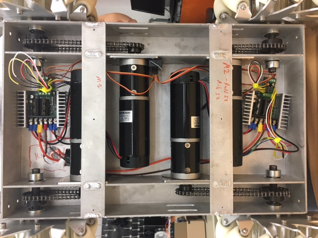
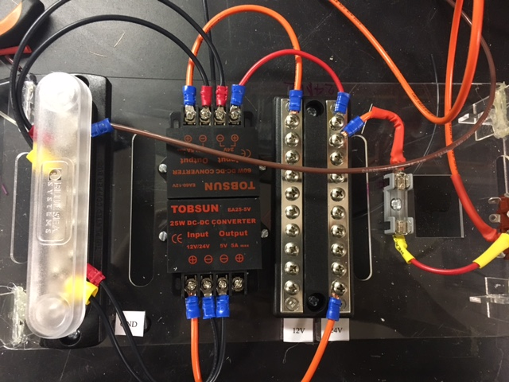
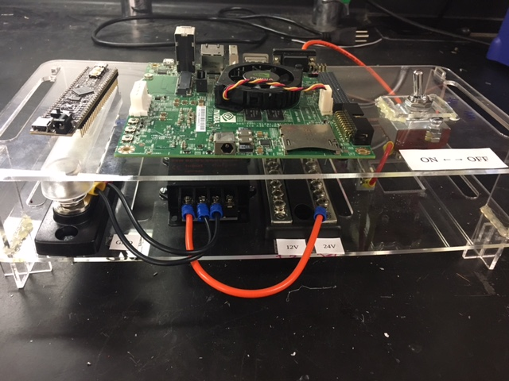
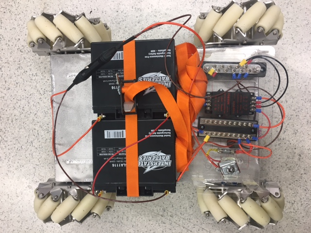

Project Introduction
In collaboration with the NxR lab, ME398 Senior Design team, and MS in Mechanical Engineering students, the goal for this portion of the project was to source and control a mobile base for a system that would allow 3 or more mobile manipulators to cooperatively position a large-scale manufacturing component.
We have three people in our team, Chainatee, Elton and me. Chainatee and me focus on electrical system setup and Elton focuses on controlling. The demo shows above.
Robot Introduction
The robot we use is the Superdroid Robots IG52 DB model. This robot has Mecanum wheel, which can rotate 360 degrees, so that the orientation of the manipulators that will be eventually placed on the base will not rotate as the base is moving. Also it's payload is larger than the weight we need. The motor we use has encoder, which can be used to control the velocity for each wheel.
Mechanical System Design and Assembly
This robot has three parts. The top layer is the layer to place the mobile manipulators, the mid layer is the place for batteries and electrical components, and the lower layer is for mechanical system, motor controllers and Kangaroo.
The image shows below shows how we worke together.
Electrical System
1. Electrical part for the lower layer
Each motor controller connects two motors and a Kangaroo. The encoders for each motor connects to the Kangaroo. Control signals from either a microcontroller or a R/C receiver are connected to the Kangaroo to control the motors. The picture for this part shows below:
2. Electrical part for the mid layer
The battery can provide 24V for two motor controllers, and we use DC converter to provide 12V for JETSON and 5V for PIC.
We laser cut two layers, the first layer hold two DC converters and a fuse and the second layer holds a switch, JETSON and a PIC, which shows below:
 The following image is what it looks like after we setup.
Tuning the Kangaroo and Setting up for RC Control
Kangaroo has an auto-tuning controller features for the motors connected to it. For tuning the Kangaroo, we first put the Kangaroo in ‘Teach Tuning’ mode, and then rotate both motors at the same time. After rotating the motors in the direction the motors will move in, pushing a button on the Kangaroo will begin the auto-tuning process.
After tuning the Kangaroos, we begin connecting signals of the R/C receiver to the control inputs of both Kangaroos. The controls are setup such that each axis of the joysticks control an individual wheel. For example, the throttle control (up-down on the left joystick) controls the back left wheel, while the rudder control (left-right on the left joystick) controls the front right wheel. The right joystick has a similar setup for the other wheels
Future work
Our future plans is to use a microcontroller to control the robot, and setup up a Linux computer using a NVIDIA Jetson that can communicate with the microcontroller, and add the delta robot manipulator with the mobile base.